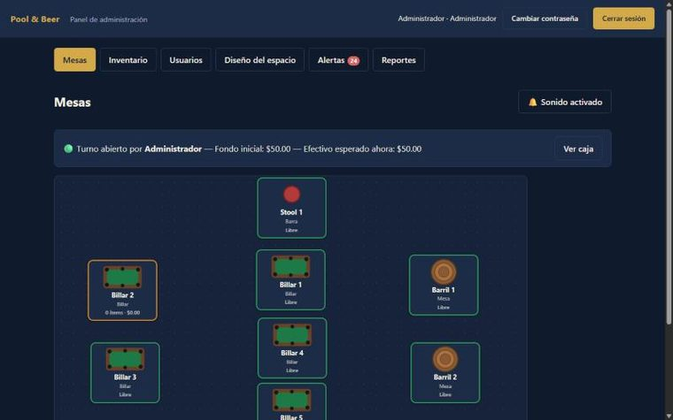

En uso real
POS para bares y restaurantes
Punto de venta completo: plano de sala interactivo, comandas que llegan a cocina en tiempo real por websocket, inventario con alertas, turnos de caja con arqueo, informes de ventas y un kiosco de autopedido para tablet.
- React
- TypeScript
- Node
- SQLite
- Socket.IO
Repositorio privado